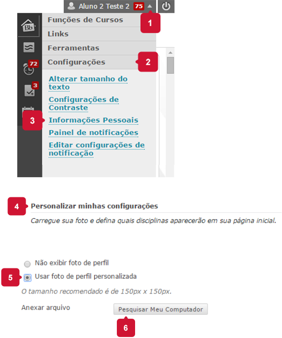

Foto do perfil
É possível fazer o upload de uma foto no seu perfil no Blackboard. Ela será visualizada por professores e colegas de curso, facilitando o reconhecimento, a comunicação e a dinâmica das atividades.
Para inserir sua foto:

Selecione uma foto sua, preferencialmente recente e com boa qualidade.
O tamanho recomendado é de 150px por 150px.